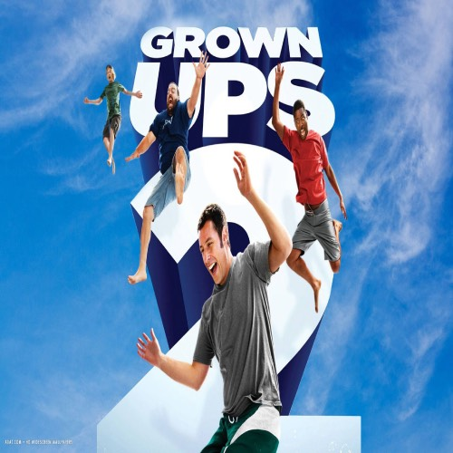

Adam Richard Sandler (fæddur september 9, 1966) er bandarískur grínisti, leikari, handritshöfundur, framleiðandi, söngvari og tónlistarmaður. Hann er fyrst og fremst grínískur aðalleikari í kvikmyndum og sjónvarpi, meðal annars tilnefningar til þrennra Grammy-verðlauna, fimm Primetime Emmy-verðlauna, Golden Globe-verðlauna og Screen Actors Guild-verðlauna. Árið 2023 hlaut Sandler Mark Twain-verðlaunin fyrir amerískan húmor.
Sandler var leikari í NBC-skessa gamanþáttaröðinni Saturday Night Live frá 1990 til 1995. Hann lék í Hollywood-kvikmyndum sem söfnuðu inn yfir 2 milljörðum dollara um allan heim. Sandler var metinn á 420 milljónir dala árið 2020 og skrifaði undir nýjan fjögurra kvikmyndasamning við Netflix að verðmæti yfir 250 milljónir dala.
Í grínhlutverkum Sandlers má nefna Billy Madison (1995), Happy Gilmore (1996), The Waterboy (1998), The Wedding Singer (1998), Big Daddy (1999), Mr. Deeds (2002), 50 First Dates (2004), The Longest Yard (2005), Click (2006), Grown Ups (2010), Just Go with It (2011), Grown Ups 2 (2013), Blended (2014), Murder Mystery (2019) og Hubie Halloween (2020). Hann raddaði einnig Davey, Whitey og Eleanore í Eight Crazy Nights (2002) og Dracula í fyrstu þremur myndunum í Hotel Transylvania sérleyfinu (2012–2018).
Nokkrar Sandler gamanmyndir, eins og Jack and Jill (2011), hafa fengið verðlaun, sem hafa skilað níu Golden Raspberry verðlaunum og 37 Raspberry verðlaunum tilnefningar, meira en nokkur leikari nema Sylvester Stallone. Sandler hefur hins vegar einnig hlotið lof fyrir aðalhlutverk sín í gamanleikmyndum, þar á meðal Punch-Drunk Love eftir Paul Thomas Anderson (2002), Reign Over Me eftir Mike Binder (2007), The Meyerowitz Stories eftir Noah Baumbach (2017), Safdie-bræðrunum. Uncut Gems (2019) og Jeremiah Zagar's Hustle (2022), þar sem hinir þrír síðastnefndu voru í aðalhlutverki á ferlinum.
